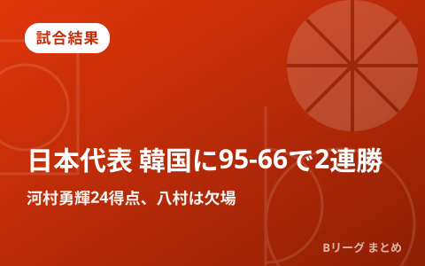
公式・メディアの新着
もっと見る ›B.LEAGUE公式サイトとバスケ専門メディアの新着見出しを1日3回自動で収集しています。見出しをタップすると配信元の記事が開きます。
速報
【ワールドカップ2027アジア予選】個の力で圧倒したバスケ男子日本代表、ここから急ピッチでチーム力の熟成へ
速報
【ワールドカップ2027アジア予選】八村塁がゲームハイの22得点を挙げた男子日本代表、個で違いを生み出し韓国に20点差の快勝
試合結果
【U18アジアカップ2026】男子U18日本代表は初戦で開催国インドに91-56で快勝、ベネディクト研一郎がチームハイの20得点の活躍
試合結果
【女子ワールドカップ2026】リズムに乗れず韓国に苦戦した女子日本代表、それでも田中こころの劇的3ポイントシュートで逆転勝利
速報
【ワールドカップ2027アジア予選】男子日本代表に追加招集された高島紳司「ここからさらに自分の力を見せつけないといけない」
速報
【ワールドカップ2027アジア予選】約2年ぶりに日本代表へ復帰した河村勇輝「日本代表のレベルが上がったのか感じたい」
速報
【ワールドカップ2027アジア予選】パリ五輪以来の日本代表復帰を決めた八村塁「日本のバスケは黄金時代なので無駄にしてはいけない」
速報
【ワールドカップ2027アジア予選】8月15日&16日の韓国戦に挑む男子日本代表のロスターが決定、八村塁と河村勇輝の共闘が実現!
速報
プレシーズンも見逃せない!Bプレミア対Bワンや海外チームとの対戦といった普段見られない試合を『バスケットLIVE』がライブ配信
速報
女子日本代表が韓国代表と激突する『三井不動産カップ2026 (東京大会)』の参加メンバーが決定、第4次合宿参加選手14名全員で挑む
移籍情報
東京サンロッカーズがラウリー・アルキンズを獲得、マーカス・ジョージズ=ハントはコンディション不良などを理由に契約解除
移籍情報
自由交渉選手リストの公示
ピックアップ
試合結果
河村勇輝24得点で日本代表が韓国に95-66で2連勝、八村塁は欠場…
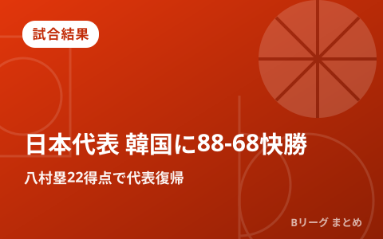
試合結果
八村塁22得点で衝撃の代表復帰、日本代表が韓国に88-68快勝｜買…
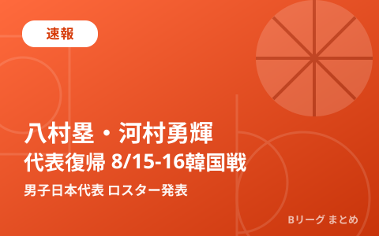
速報
八村塁がパリ五輪以来の代表復帰、河村勇輝も合流 男子日本代表 8/…
注目の公式動画
▲ B.PREMIER元年となる2026-27シーズンの公式プロモーション映像（出典：B.LEAGUE公式YouTubeチャンネル）
編集部まとめ記事
もっと見る ›試合結果
河村勇輝24得点で日本代表が韓国に95-66で2連勝、八村塁は欠場｜SoftBank CUP 2026
試合結果
八村塁22得点で衝撃の代表復帰、日本代表が韓国に88-68快勝｜買取大吉カップ2026
速報
八村塁がパリ五輪以来の代表復帰、河村勇輝も合流 男子日本代表 8/15･16韓国戦ロスター発表
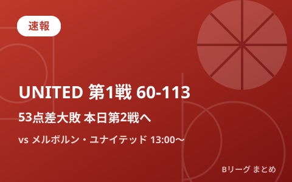
速報
B.LEAGUE UNITED 第1戦60-113大敗 本日メルボルン・ユナイテッドと第2戦
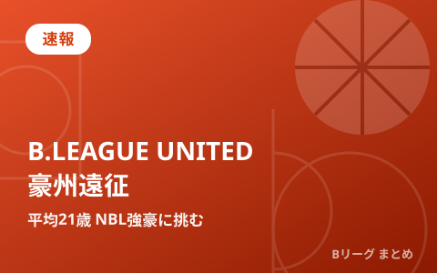
速報
B.LEAGUE UNITED 豪州遠征 平均21歳の若手精鋭がNBL強豪に挑む
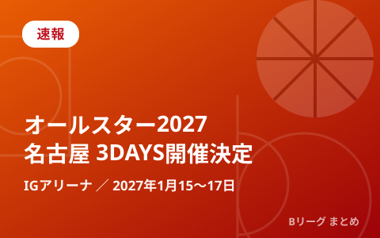
速報
Bリーグオールスター2027 名古屋IGアリーナで1月15〜17日3DAYS開催、中学生バスケ大会も同会場へ
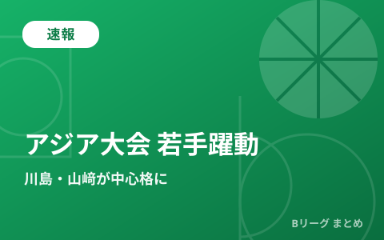
速報
アジア大会2026へ 若手躍動の男子日本代表 川島悠翔・山﨑一渉が中心格に
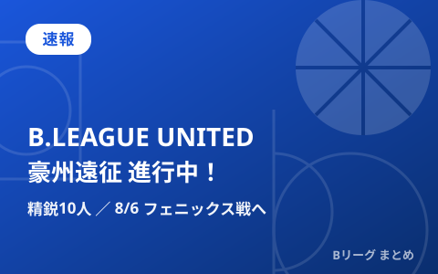
速報
B.LEAGUE UNITEDが豪州遠征中！精鋭10人が8月6日フェニックス戦へ〜2030年NBAへの挑戦

移籍情報
岸本隆一が京都ハンナリーズへ移籍 琉球の象徴が新天地で日本一を目指す

移籍情報
名古屋Dが大阪退団のライアン・ルーサーを獲得 昨季平均16得点のPF／C
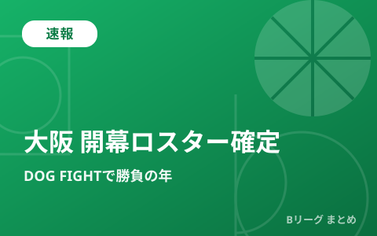
速報
大阪エヴェッサ 2026-27開幕ロスター確定 「DOG FIGHT」で結果を求める年に
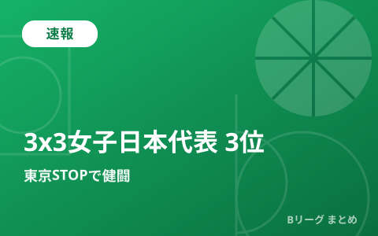
速報
3x3女子日本代表が東京STOPで3位入賞 ウィメンズシリーズ2026
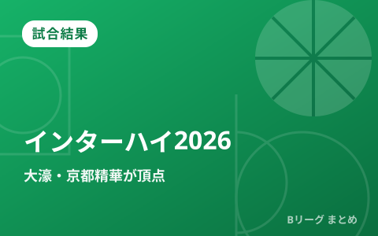
試合結果
【インターハイ2026】男子・福岡大濠が9年ぶり、女子・京都精華学園が2年ぶり優勝

移籍情報
富山グラウジーズが野﨑由之と契約継続 右膝ケガから復帰へ

移籍情報
【8月最新】B.PREMIER移籍まとめ 千葉がニカ、A東京がホグ・ジョンソンを獲得

移籍情報
2026年オフの主な負傷情報まとめ 秋田・中山拓哉が左膝骨挫傷と発表
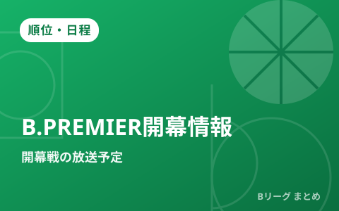
順位・日程
B.PREMIER開幕戦はテレビ朝日系で放送 9月22日にA東京vs琉球
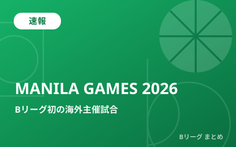
速報
B.LEAGUE初の海外主催試合「MANILA GAMES 2026」9月マニラで開催

速報
FIBAがW杯アジア予選「注目の10選手」を発表 日本代表から富永啓生が選出

速報
7月6日 日本代表vs韓国戦 視聴ガイド W杯予選Window3アウェー2連戦の見方

順位・日程
新リーグ「Bプレミア」2026-27が9月22日開幕 アルバルク東京vs琉球で幕開け

速報
FIBA・W杯アジア予選パワーランキング更新 日本は1つ上げて6位、7月のWindow3で中国に“借りを返せるか”

移籍情報
【6月25日の契約情報まとめ】Bプレミア参戦クラブが新戦力を続々獲得、琉球から宇都宮への移籍も

移籍情報
【6月下旬の移籍まとめ】千葉が菅原、A東京が飯田を獲得 自由交渉リストの動きも活発

速報
男子日本代表、8月に国際試合4試合を開催へ 佐賀でモンゴル・東京で韓国と対戦

速報
河村勇輝が日本代表・第2次強化合宿に参加 7月のW杯予選Window3は出場予定なし

速報
男子日本代表、W杯予選Window3へ第2次強化合宿の23名を発表 7月に中国・韓国とアウェー2連戦

試合結果
長崎ヴェルカが初の年間王者に B1チャンピオンシップ2025-26ファイナルで琉球を撃破
最終更新:
2026年08月17日 12:53